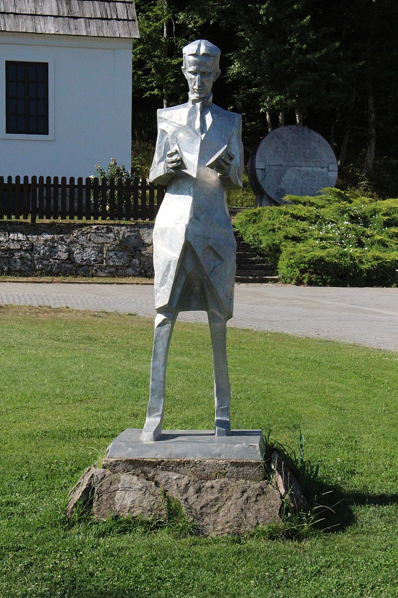

Комплекс присвячений Ніколі Теслі — фізику і винахіднику сербського походження, який у 1856 році народився в цьому селі. Установу було відкрито 10 липня 2006 року на 150 річницю із дня народження Ніколи Тесли. Комплекс складається із: місця народження Тесли із постійною виставкою, церкви святих Петра і Павла, місцевого цвинтаря, кам'яних пам'ятників та лавочок архітектора Zdenko Kolacio, статуї Тесли скульптора Mile Blažević, аудиторії, прототипів винаходів Тесл, пішохідних стежок та ін.
У музеї час від часу проводяться різноманітні технічні та навчальні заходи. Регулярний прийом відвідувачів проводиться постійно від середи до неділі.
